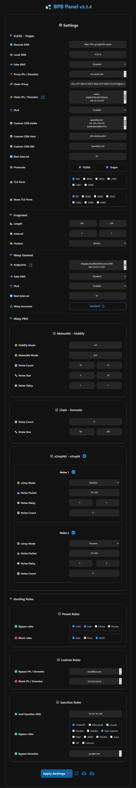

پنل BPB

معرفی
این پروژه یه پنل کاربری برای دسترسی به کانفیگهای رایگان، امن و خصوصی VLESS، Trojan و Warp ارائه میده. حتی وقتی دامنهها یا سرویس Warp توسط اپراتورها فیلتر شدن، اتصال رو تضمین میکنه. این پنل به دو روش راهاندازی میشه:
- با Cloudflare Workers
- با Cloudflare Pages
🌟 اگه پنل BPB براتون مفید بوده، با حمایتتون بهم دلگرمی میدید 🌟
ویژگیها
- رایگان و شخصی: بدون هیچ هزینهای، سرور شما شخصی هست.
- پنل کاربری ساده: کار باهاش راحته و تنظیمات و استفاده ازش خیلی آسونه.
- پروتکلهای متنوع: ارائه کانفیگهای VLESS، Trojan و Wireguard (Warp).
- DoH شخصی: یک DoH شخصی با قابلیت تنظیم DNS زیربنایی.
- کانفیگهای Warp Pro: کانفیگهای Warp بهینهشده برای شرایط خاص ایران.
- پشتیبانی از Fragment: اتصال حتی در صورت فیلتر شدن دامنه.
- قوانین مسیریابی کامل: دور زدن سایتهای ایرانی، چینی و روسی، مسدود کردن QUIC، محتوای پورن، تبلیغات، بدافزارها، فیشینگ و در زدن سایتهای تحریمی.
- زنجیرهی Proxy: میتونید یه Proxy زنجیرهای از نوع VLESS، Trojan، Shadowsocks، Socks یا http اضافه کنید تا IP ثابت بشه.
- پشتیبانی از برنامههای مختلف: لینکهای اشتراک برای برنامههای با هستههای Xray، Sing-box و Clash-Mihomo.
- پنل امن با رمز عبور: پنل محافظت شده با رمز عبور.
- سفارشیسازی کامل: تنظیم IP تمیز، Proxy IP، سرورهای DNS، انتخاب پورتها و پروتکلها، Warp Endpoint و خیلی امکانات دیگه.
محدودیتها
- اتصال UDP: پروتکلهای VLESS و Trojan روی Workerها نمیتونن UDP رو بهخوبی پشتیبانی کنن، برای همین بهصورت پیشفرض غیرفعاله (این روی امکاناتی مثل تماس تصویری تلگرام تأثیر میذاره). DNSهای UDP هم پشتیبانی نمیشن. به جاش DoH فعاله که امنتره.
- محدودیت تعداد درخواست: هر Worker برای VLESS و Trojan روزانه 100 هزار درخواست پشتیبانی میکنه، که برای 2-3 نفر کافیه. برای اتصال نامحدود میتونید از کانفیگهای Warp استفاده کنید.
شروع به کار
برنامههای پشتیبانیشده
| Client | Version | پشتیبانی از Fragment | پشتیبانی از Warp Pro |
|---|---|---|---|
| v2rayNG | 1.10.26 یا بالاتر | ||
| MahsaNG | 14 یا بالاتر | ||
| v2rayN | 7.15.4 یا بالاتر | ||
| v2rayN-PRO | 1.9 یا بالاتر | ||
| Sing-box | 1.11.2 یا بالاتر | ||
| Streisand | 1.6.64 یا بالاتر | ||
| Clash Meta | |||
| Clash Verge Rev | |||
| FLClash | |||
| AmneziaVPN | |||
| WG Tunnel |
متغیرهای محیطی (داشبورد کلادفلر)
| نام متغیر | مورد استفاده | اجباری |
|---|---|---|
| UUID | UUID برای پروتکل VLESS |  |
| TR_PASS | پسورد پروتکل Trojan | |
| PROXY_IP | Proxy IP برای VLESS و Trojan |  |
| PREFIX | NAT64 Prefix برای VLESS و Trojan | |
| SUB_PATH | مسیر لینکهای اشتراک شخصی | |
| FALLBACK | دامنهی پوششی برای VLESS و Trojan | |
| DOH_URL | DOH برای عملیات داخلی ورکر | |
تعداد ستارهها به مرور زمان